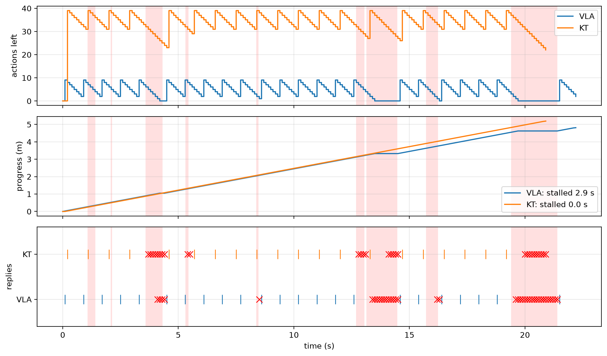

import math
import matplotlib.pyplot as plt
import numpy as np
from comm_core import *Robot control over Wi-Fi
A custom channel model: a robot controlled from an access point, over a ray-traced Wi-Fi link with bursts of interference.
A robot drives along a path in a house and is controlled from an access point (AP). At regular intervals:
- Request: the robot sends a camera image (224 × 224 RGB, about 100 Wi-Fi packets) to the AP.
- Policy: the AP runs the policy (inference takes some time).
- Response: it sends back the next actions, which the robot executes. When it runs out of actions, it stops and waits (a stall).
A request fails if one of its packets is still lost after the MAC’s retries, and the robot then sends a new image. Bursts of interference (or someone blocking the line of sight) make the link much worse for a while.
The question: does sending a long plan per request (KT, 40 actions) avoid the stalls that short action chunks (VLA, 10 actions) suffer when the link is bad?
None of this is specific to comm-core: it is a model someone wrote for this question. Here is how its parts map onto comm-core’s:
| part of the model | comm-core |
|---|---|
| AP ↔︎ robot, 10 dBm uplink, 20 dBm downlink | GraphTopology, one Link per direction |
| Sionna RT paths every 5 cm along the route, moved in between | RayTracedPathsFading (trace_paths with a real scene) |
| bursts lowering the SINR for a while, the same for both methods | GilbertElliottFading, seeded |
| 802.11ac MCS 7: EESM over 52 subcarriers, a calibrated packet-error curve | SystemLevelChannel with EESMErrorModel |
| 1500-byte packets, up to 7 retries, 200 µs per attempt, 65 Mb/s | FragmentingChannel |
| request at a control step, reply after inference, arrival after the airtime | Network(delayed_delivery=True), send(..., at=...) |
| the robot, its actions and stalls | the application: a loop around the network |
The radio
An 802.11ac-like link: 20 MHz, 52 data subcarriers, a fixed MCS 7 (65 Mb/s).
FREQUENCY = 5.18e9 # Wi-Fi channel 36
SUBCARRIERS = (np.arange(52) - 25.5) * 312.5e3 # 52 data subcarriers of a 20 MHz channel
NOISE_W = 10 ** ((-174 + 10 * np.log10(20e6) + 7.0 - 30) / 10) # thermal noise over 20 MHz, 7 dB noise figure
AP = np.array([0.0, 0.0, 2.4])
ROBOT_HEIGHT = 0.4Propagation: paths at anchors
With a real scene, trace the paths from the AP to anchors every 5 cm over the area the robot drives through, on a machine with Sionna RT, and save them:
from sionna.rt import load_scene
scene = load_scene('small_house_imported.xml')
scene.frequency = FREQUENCY
area = grid_points((-7.0, -3.5), (-3.0, 0.0), 0.05, height=ROBOT_HEIGHT)
RayTracedPathsFading(**trace_paths(scene, [AP], area, max_depth=6)).save('house_paths.npz')Then RayTracedPathsFading.from_npz('house_paths.npz', subcarriers=SUBCARRIERS). To run here without the scene, the paths come from a simple room: a line-of-sight path and a reflection off each of two walls (image method).
C = 299_792_458.0
WALLS = [(1, 3.0, -0.6), (0, -8.0, -0.5)] # (axis, coordinate, reflection coefficient)
def room_paths(tx, rx):
"The paths from tx to rx: line of sight and one reflection off each wall."
sources = [(tx, 1.0, np.eye(3))]
for axis, c, gamma in WALLS:
mirror = np.eye(3); mirror[axis, axis] = -1
sources.append((mirror @ tx + 2 * c * np.eye(3)[axis], gamma, mirror))
a, tau, u_tx, u_rx = [], [], [], []
for source, gamma, mirror in sources:
v = rx - source; length = np.linalg.norm(v)
a.append(gamma * C / FREQUENCY / (4 * np.pi * length) * np.exp(-2j * np.pi * FREQUENCY * length / C))
tau.append(length / C); u_rx.append(-v / length); u_tx.append(mirror @ (v / length))
return a, tau, u_tx, u_rx
area = grid_points((-7.0, -3.5), (-3.0, 0.0), 0.05, height=ROBOT_HEIGHT) # anchors every 5 cm
traced = [room_paths(AP, p) for p in area]
paths = RayTracedPathsFading(AP[None], area, *(np.array([t[k] for t in traced])[None] for k in range(4)),
frequency=FREQUENCY, subcarriers=SUBCARRIERS)
paths.set_positions({'ap': AP, 'robot': (-4.8, -2.8, ROBOT_HEIGHT)})
print(f"{len(area)} anchors; path gain at the start of the route: {10 * np.log10(paths.path_gain('ap', 'robot')):.1f} dB")5751 anchors; path gain at the start of the route: -58.8 dBThe link: bursts, EESM, packets and retries
The pieces stack:
GilbertElliottFadingweakens the paths bypenalty_dbduring bursts (3 s apart on average, 0.6 s long).SystemLevelChannelgives each packet the SINR at each subcarrier.EESMErrorModelturns those SINRs into the packet’s error rate (MCS 7: β = 28, 10% of 1000-byte packets lost at 21 dB, approximate values).FragmentingChannelsplits a message into 1500-byte packets, retries each up to 7 times, and counts the airtime. Each attempt is at its own time, so it sees the burst state at that moment.
def wifi_channel(penalty_db):
radio = SystemLevelChannel(
fading=GilbertElliottFading(paths, mean_good_s=3.0, mean_bad_s=0.6, penalty_db=penalty_db),
noise_power=NOISE_W,
per_model=EESMErrorModel(beta=28.0, threshold_db=21.0, slope=1.5),
)
return FragmentingChannel(radio, mtu_bits=8 * 1500, retry_limit=7, overhead_s=200e-6, rate_bps=65e6)
def network(penalty_db, seed):
topology = GraphTopology([Link('robot', 'ap', tx_power_w=10 ** ((10 - 30) / 10), bandwidth_hz=20e6), # 10 dBm up
Link('ap', 'robot', tx_power_w=10 ** ((20 - 30) / 10), bandwidth_hz=20e6)]) # 20 dBm down
channel = wifi_channel(penalty_db)
net = Network([Node('robot'), Node('ap')], topology, IdealProtocol(), AnalyticalBackend(channel), delayed_delivery=True)
net.reset(seed) # the same seed: the same bursts, whatever the method
return net, channelThe robot
The application: every 0.1 s, the robot moves if it has actions left, and asks for new ones 3 actions before it needs them. The network carries the messages:
- The request is sent at once (
step(dt=0)). - The reply: when the AP has the image, it replies after its inference time (
send(..., at=...)). - Arrival: the actions arrive when their packets are through (
delayed_delivery). - Failure: a failed request is noticed when its last retry ends.
METHODS = {
'VLA': dict(actions=10, inference_s=0.05, reply_bytes=10 * 7 * 4), # 10 actions of 7 floats
'KT': dict(actions=40, inference_s=0.08, reply_bytes=600), # an encoded plan of 40 actions
}
ROUTES = {
'VLA': [(-4.8, -2.8), (-3.6, -1.6), (-3.8, -1.2), (-6.4, -0.6)],
'KT': [(-4.8, -2.8), (-3.5, -1.75), (-3.6, -1.1), (-6.4, -0.5)],
}
DT, SPEED, REPLAN_EVERY, LEAD, IMAGE_BYTES, T_MAX = 0.1, 0.25, 10, 3, 224 * 224 * 3, 300.0
def run(method, route, penalty_db, seed, log=False):
cfg = METHODS[method]
route = np.asarray(route, float)
along = np.r_[0, np.cumsum(np.linalg.norm(np.diff(route, axis=0), axis=1))]
where = lambda s: (np.interp(s, along, route[:, 0]), np.interp(s, along, route[:, 1]), ROBOT_HEIGHT)
net, channel = network(penalty_db, seed)
t = s = stall = 0.0
actions = since = requests = fails = 0
started = waiting = False
failed_at = None
trace, oks, failures = [], [], []
def handle(results):
nonlocal failed_at
for r in results:
sent = r.transmission
if r.success and sent.message.type == 'image': # the AP has the image: it answers after inference
reply = Message('ap', 'robot', None, type='actions', size_bits=8 * cfg['reply_bytes'])
net.send(reply, at=sent.start_time + r.latency + cfg['inference_s'])
elif not r.success: # lost: known when the last retry is over
failed_at = sent.start_time + r.latency
while s < along[-1] - 1e-9 and t < T_MAX:
channel.set_positions({'ap': AP, 'robot': where(s)})
handle(net.step_to(t))
if net.receive('robot'): # new actions
actions, since, started, waiting = cfg['actions'], 0, True, False
oks.append(t)
if failed_at is not None and failed_at <= t:
fails, failed_at, waiting = fails + 1, None, False
failures.append(t)
if not waiting and (not started or since >= REPLAN_EVERY - LEAD):
net.send(Message('robot', 'ap', None, type='image', size_bits=8 * IMAGE_BYTES))
handle(net.step(dt=0.0)) # it leaves now
requests, waiting = requests + 1, True
if actions > 0:
s, actions, since = min(along[-1], s + SPEED * DT), actions - 1, since + 1
elif started:
stall += DT
trace.append((t, actions, s))
t += DT
out = dict(stall=stall, requests=requests, fails=fails, time=t)
if log:
out.update(trace=np.array(trace), oks=oks, failures=failures, bursts=channel.channel.fading.episodes(t))
return outOne run
One run at a 30 dB burst penalty, for both methods. The red bands are bursts (the same for both).
- Top: how many actions the robot has left.
- Middle: how far along the route it is. Flat stretches are stalls.
- Bottom: the replies that arrived (|) and the requests that failed (×).
seed = next(s for s in range(30) if run('VLA', ROUTES['VLA'], 30, s)['stall'] > 0) # a run where VLA stalls
runs = {m: run(m, ROUTES[m], 30, seed, log=True) for m in METHODS}
fig, axes = plt.subplots(3, 1, figsize=(11, 6.5), sharex=True)
end = max(r['time'] for r in runs.values())
for ax in axes:
for a, b in runs['VLA']['bursts']:
ax.axvspan(a, min(b, end), color='red', alpha=0.12, lw=0)
for k, (m, r) in enumerate(runs.items()):
tr = r['trace']
axes[0].step(tr[:, 0], tr[:, 1], where='post', label=m)
axes[1].plot(tr[:, 0], tr[:, 2], label=f"{m}: stalled {r['stall']:.1f} s")
axes[2].plot(r['oks'], [k] * len(r['oks']), '|', ms=12, color=f'C{k}')
axes[2].plot(r['failures'], [k] * len(r['failures']), 'x', ms=8, color='red')
axes[0].set(ylabel='actions left'); axes[1].set(ylabel='progress (m)')
axes[2].set(yticks=range(len(runs)), yticklabels=list(runs), ylim=(-0.6, len(runs) - 0.4), ylabel='replies', xlabel='time (s)')
axes[0].legend(loc='upper right'); axes[1].legend(loc='lower right')
for ax in axes:
ax.grid(alpha=0.3)
plt.tight_layout()
assert runs['VLA']['stall'] > runs['KT']['stall']
Results
30 runs per point. Within a run, both methods see the same bursts. The sweep takes a few minutes, so it is flagged slow: nbdev_test --flags slow runs it.
one = run('VLA', ROUTES['VLA'], 30, 0) # one run, with bad bursts
assert one['requests'] > 0 and one['time'] < T_MAX and one['stall'] >= 0print('burst SINR drop | ' + ' | '.join(f'{m}: mean stall, runs with a stall, failed requests' for m in METHODS))
for penalty_db in (0, 10, 20, 30):
row = []
for method in METHODS:
runs = [run(method, ROUTES[method], penalty_db, seed) for seed in range(30)]
stall = np.array([r['stall'] for r in runs])
failed = sum(r['fails'] for r in runs) / sum(r['requests'] for r in runs)
row.append(f'{method}: {stall.mean():4.2f} s, {np.mean(stall > 0):4.2f}, {100 * failed:4.1f} %')
print(f'{penalty_db:9d} dB | ' + ' | '.join(row))burst SINR drop | VLA: mean stall, runs with a stall, failed requests | KT: mean stall, runs with a stall, failed requests
0 dB | VLA: 0.00 s, 0.00, 0.0 % | KT: 0.00 s, 0.00, 0.0 %
10 dB | VLA: 0.00 s, 0.00, 0.0 % | KT: 0.00 s, 0.00, 0.0 %
20 dB | VLA: 0.00 s, 0.00, 1.6 % | KT: 0.00 s, 0.00, 3.5 %
30 dB | VLA: 1.25 s, 0.87, 42.8 % | KT: 0.00 s, 0.00, 41.1 %With bad enough bursts, a request that falls in one fails, and the robot runs out of actions before a new one gets through. With 10 actions per response (1 s), that happens often. With a 40-action plan (4 s), the robot usually still has actions left when the burst ends.
To use your own model, each piece can be swapped on its own:
- Scene: the paths of a real scene, traced with
trace_paths. - Error model: 5G NR’s (
SionnaErrorModel), or your own subclass ofErrorModel. - Time-varying effects: another
Fadingthat reads the transmission’s time. - Medium access: another protocol, e.g.
TDMAProtocolwith several robots.
The application, the robot loop, stays the same.